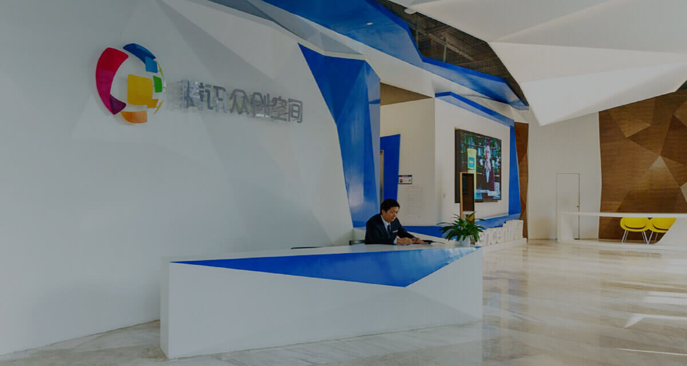

全球战疫
全球战疫，一起行动
在新冠肺炎疫情之战中，栗子秉持科技向善，
通过互联网和科技的力量为全球抗疫提供支持。
践行承诺
支持善举
栗子基金会
栗子公益慈善基金会（栗子基金会）于2020年成立，推动互联网与公益慈善事业的深度融合与发展。

网络捐款平台
网络捐款平台是栗子基金会推出的首个网上公开募捐平台，开放给合资格的慈善机构免费使用。个人用户可以选择自己信任的公益慈善项目，自主选择捐款，让人人可公益成为现实。
鼓励创新

激励科学创新
聚焦基础科学和前沿核心技术，面向未来，推动研究成果实现突破。
青少年培养
为青少年提供开阔视野、融合交流的机会，培养未来人才。

助力创业者
联合社会各界力量，整合资源，助力创业者实现梦想。

企业家成长
与数字生态伙伴企业家共同进步，为全球精英赋能，加速企业成长。